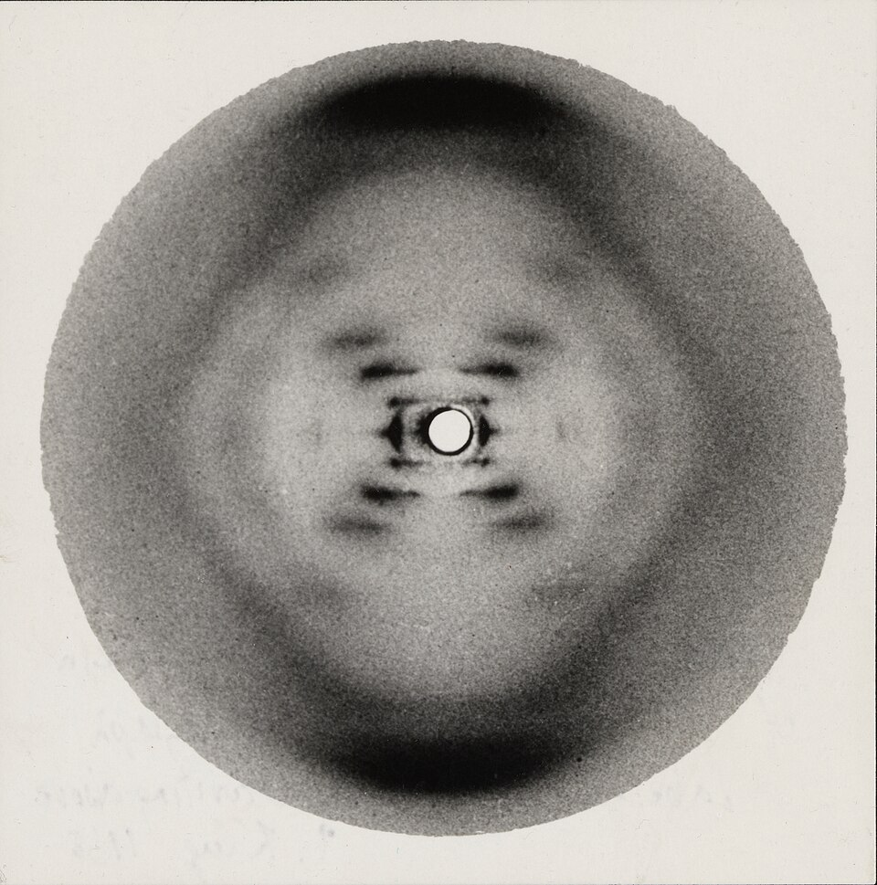
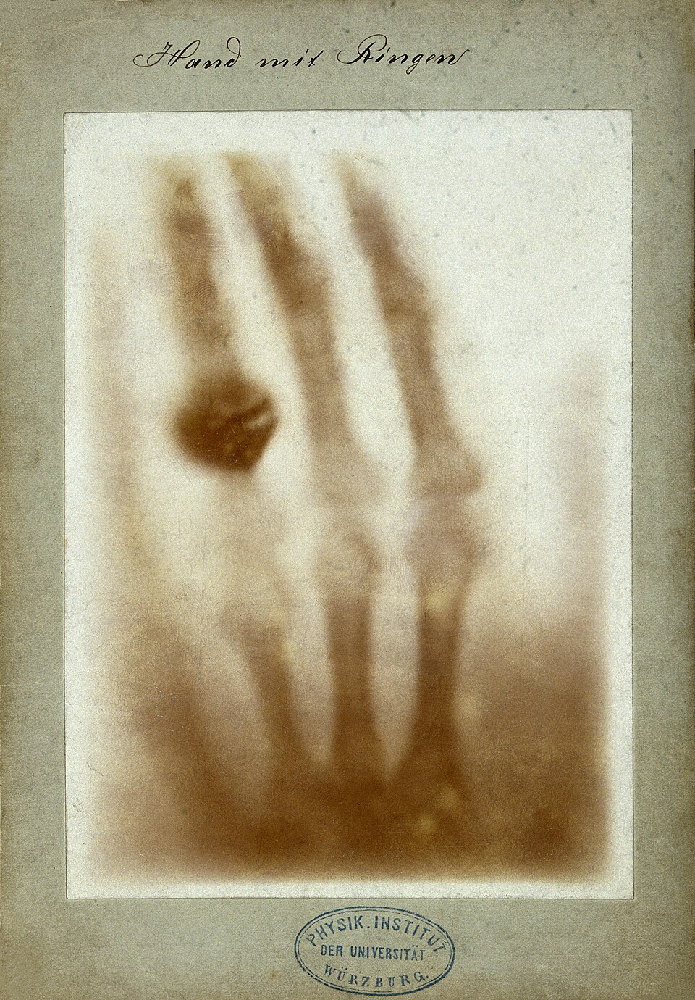
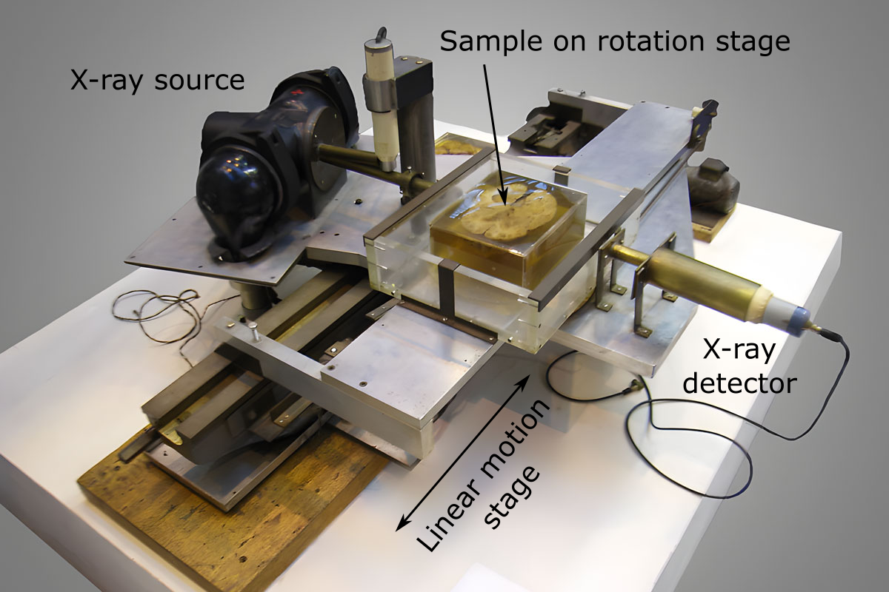
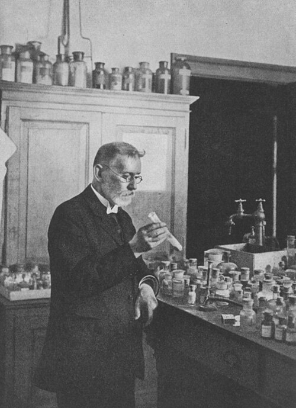
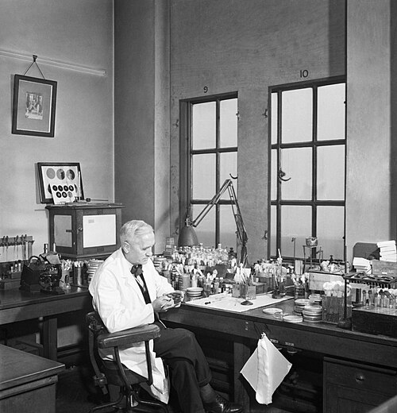
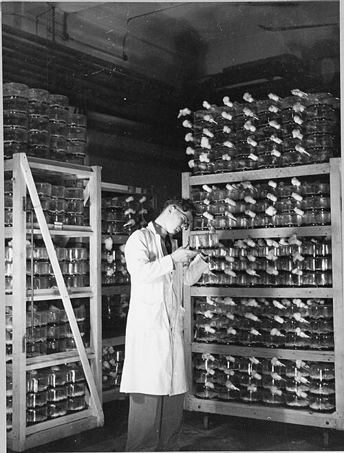
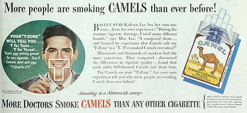

Modern
Paper 1: Medicine Through Time with the Western Front
Course Textbook
Enquiry: How has medicine changed from c1250 to the modern day?
Contents
|
Lesson 1: KT4.1: Ideas on Causes: Genetics, DNA & The Human Genome Project (c.1953–present)
|
|
|
Lesson 2: KT4.2: Lifestyle Factors & The Technological Revolution in Diagnosis (c.1900–present)
|
|
|
Lesson 3: KT4.3: The Search for Magic Bullets, High-Tech Treatments & The Birth of the NHS (1909–1948)
|
|
|
Lesson 4: KT4.4: Case Study 1: The Antibiotic Revolution: Fleming, Florey & Chain and Penicillin (1928–1945)
|
|
|
Lesson 5: KT4.5: Case Study 2: Public Health & The Fight Against Lung Cancer (c.1950–present)
|
|
L1: KT4.1: Ideas on Causes: Genetics, DNA & The Human Genome Project (c.1953–present)[[SRC_MARKER:L15_Start]]
Learning Objectives
Explain how Gregor Mendel’s laws and 20th-century biochemistry established that genes carry hereditary traits.
Analyze the breakthrough of Rosalind Franklin, Maurice Wilkins, James Watson, and Francis Crick in discovering the double helix.
Evaluate the diagnostic and therapeutic impact of the Human Genome Project (1990–2003).
For thousands of years, physicians understood that deadly illnesses could haunt family trees across generations, yet the biological mechanism remained an impenetrable mystery. The mid-twentieth-century discovery of the molecular structure of DNA, followed by the international Human Genome Project, unlocked the fundamental code of life—transforming medicine from passive symptom management into predictive, personalized genomic science.
Did you know?
- If unwound and tied end-to-end, the DNA inside a single human cell would stretch approximately six feet long, yet it is packed into a nucleus smaller than a pinpoint.
- Rosalind Franklin’s Photograph 51 required 62 continuous hours of X-ray radiation in a damp basement room with 75% relative humidity to keep the DNA fibers hydrated.
- The international Human Genome Project sequenced over 3 billion base pairs of DNA, completed in 2003 two years ahead of schedule and under budget.
Vocabulary Check
The Odd One Out: Circle ONE term that does not belong with the others. Explain your reasoning: What historical connection links the other terms, and why is your chosen term different?
DNA (Deoxyribonucleic Acid) | X-ray Crystallography | Human Genome Project | Hereditary Disease | Base Pairing
Teacher Model / Pupil Reasoning:
[[SRC_MARKER:L15_Source_0]]
Source S1: Rosalind Franklin’s Photograph 51 (May 1952)

Photograph 51: X-ray diffraction photograph of crystallized DNA, taken by Rosalind Franklin and Raymond Gosling at King’s College London in May 1952.
[[SRC_MARKER:L15_Source_1]]
Source S2: Watson and Crick’s 1953 Double Helix Model

The original 1953 double-helix molecular model built from sheet-metal bases and brass rods by James Watson and Francis Crick, preserved at the Science Museum, London.
[1.1] By the opening decades of the twentieth century, Louis Pasteur and Robert Koch’s Germ Theory had conquered infectious medicine, explaining how external bacteria caused cholera, tuberculosis, and anthrax. Yet physicians were confronted by a profound biological mystery: why did fatal illnesses such as cystic fibrosis, sickle cell anemia, and hemophilia recur relentlessly across generations of the same family without any microbial infection? In 1900, European botanists rediscovered the forgotten 1866 hybridization experiments of Augustinian monk Gregor Mendel, which demonstrated that physical characteristics were transmitted from parents to offspring in precise mathematical ratios via invisible biological units termed "genes."
[1.2] Medical researchers recognized that humanity possessed an internal biological blueprint; however, the physical nature of the gene remained an impenetrable enigma. Microscopic staining revealed thread-like chromosomes inside the cell nucleus, but biochemists were locked in debate over whether genetic blueprints were stored in complex chromosomal proteins or in a puzzling, overlooked nucleic acid called deoxyribonucleic acid (DNA). Without deciphering the molecular geometry of DNA, doctors could neither explain how genetic information replicated during cellular division nor comprehend how microscopic copying errors caused catastrophic hereditary mutations.
[[SRC_MARKER:L15_Source_3]]
Source S3: Rosalind Franklin’s Photograph 51 (May 1952)
Photograph 51: X-ray diffraction photograph of crystallized DNA, taken by Rosalind Franklin and Raymond Gosling at King’s College London in May 1952.
[2.1] In January 1951, physical chemist Rosalind Franklin joined King’s College London, bringing world-class expertise in X-ray crystallography—a demanding technique whereby high-energy X-ray beams were diffracted through crystallized biological fibers onto photographic film. Working alongside PhD student Raymond Gosling in a damp, subterranean basement laboratory, Franklin perfected a micro-camera setup, exposing calf thymus DNA to 62 continuous hours of radiation under controlled humidity. In May 1952, Franklin captured "Photograph 51" (Source A), a stark, razor-sharp diffraction image displaying an unmistakable dark X-shaped cross of reflections that mathematically proved DNA formed a double-stranded helical cylinder.
[2.2] Severe institutional discord paralyzed the King’s biophysics unit. Maurice Wilkins, a senior physicist who mistakenly regarded Franklin as his technical assistant rather than an independent investigator, clashed with her rigorous empirical standards. In January 1953, without Franklin’s knowledge or permission, Wilkins showed Photograph 51 to James Watson, an ambitious 24-year-old American biologist visiting from Cambridge. Watson later recorded that his jaw dropped and his pulse raced upon viewing the print: the distinct X-cross pattern immediately provided Watson and his Cambridge collaborator Francis Crick with the exact mathematical dimensions required to solve the molecule.
[[SRC_MARKER:L15_Source_4]]
Source S4: Watson and Crick’s 1953 Double Helix Model
The original 1953 double-helix molecular model built from sheet-metal bases and brass rods by James Watson and Francis Crick, preserved at the Science Museum, London.
[3.1] Armed with Franklin’s experimental measurements, Watson and Crick spent frantic weeks in their Cambridge Free School Lane laboratory assembling sheet-metal cutouts and brass wire rods on an upright stand. In March 1953, they completed a magnificent three-dimensional model (Source B) revealing that DNA was a "double helix"—two antiparallel sugar-phosphate backbones intertwined around a central axis, linked by complementary nitrogenous base pairs: Adenine (A) bonded strictly to Thymine (T), and Cytosine (C) bonded strictly to Guanine (G). This base-pairing rule instantly solved the mechanism of biological reproduction: during cell division, the two strands unzip, and each acts as a template to synthesize an identical replica. Watson and Crick famously burst into The Eagle pub, proclaiming they had discovered "the secret of life."
[3.2] Deciphering the structure of DNA was the catalyst for the greatest collaborative expedition in biomedical history: the Human Genome Project. Launched in 1990 as an international public consortium led by James Watson and Francis Collins and co-funded by the UK Wellcome Trust Sanger Institute, researchers across Britain, the United States, France, Germany, and Japan spent thirteen years decoding the genetic instruction manual. Completed in April 2003, the project successfully mapped all 3 billion chemical base pairs across humanity’s 20,000–25,000 genes, establishing a digital reference sequence that allows geneticists to pinpoint specific faulty mutations responsible for over 4,000 inherited disorders, including the BRCA1 and BRCA2 genes that elevate breast and ovarian cancer risk.
[4.1] The genetic revolution fundamentally transformed modern clinical practice from reactive symptom management into predictive, personalized medicine. Armed with genomic sequencing, contemporary doctors no longer rely on standardized treatments; instead, individuals carrying faulty hereditary mutations can undergo preventative blood screening, enabling life-saving prophylactic surgery such as double mastectomies decades before malignant tumors form. Furthermore, the twenty-first century witnessed the emergence of synthetic gene therapy and CRISPR-Cas9 molecular editing, allowing clinical geneticists to repair defective cystic fibrosis genes and treat sickle cell disease at the cellular level.
[4.2] Historiographers and medical ethicists actively debate the clinical reality versus the therapeutic hype of genetics. Medical historians emphasize the persistent "Diagnostic-Therapeutic Lag": while sequencing a patient’s genome is now rapid and inexpensive, developing safe, effective gene therapies remains extraordinarily complex, costly, and ethically contested. Furthermore, the historiographical narrative surrounding the discovery of DNA has undergone profound revision: while Watson, Crick, and Wilkins received the 1962 Nobel Prize in Physiology or Medicine, Rosalind Franklin tragically passed away from ovarian cancer in 1958 at age 37, unacknowledged during her lifetime for generating the foundational experimental evidence that made the double helix model possible.
Active Tasks
Q1. ‘Rosalind Franklin’s X-ray crystallography was more important than Watson and Crick’s model-building in the discovery of the structure of DNA.’ How far do you agree? Explain your answer [16+4 marks].
L2: KT4.2: Lifestyle Factors & The Technological Revolution in Diagnosis (c.1900–present)[[SRC_MARKER:L16_Start]]
Learning Objectives
Explain the epidemiological transition and the role of lifestyle factors in modern disease.
Trace the development of diagnostic imaging from Röntgen’s X-rays (1895) to Hounsfield’s CT scanner (1971) and MRI.
Evaluate how non-invasive diagnostic tools eliminated exploratory surgery and changed clinical practice.
As modern sanitation, clean water, and antibiotics brought lethal bacterial plagues under control, Britain underwent an unprecedented epidemiological transition. The leading killers shifted from infectious contagion to chronic lifestyle diseases caused by smoking, alcohol, and poor diet. Simultaneously, the invention of X-rays, CT scanners, MRI, and endoscopes allowed physicians to peer deep inside living organs without a single surgical incision.
Did you know?
- Wilhelm Röntgen refused to patent X-rays or name them after himself because he believed scientific discoveries belonged freely to all humanity.
- The early development of the CT scanner was funded by EMI, the British record label that made vast profits from selling vinyl records of The Beatles.
- Before modern flexible endoscopes were invented, early rigid endoscopes were tested on professional sword-swallowers because ordinary patients gagged violently.
Vocabulary Check
The Golden Sentence: Choose TWO terms from the word bank. Write ONE grammatically sophisticated, historically accurate sentence connecting them using a causal conjunction (because, although, or consequently):
X-ray | CT Scanner (Computed Tomography) | MRI (Magnetic Resonance Imaging) | Endoscope | Epidemiological Transition
Teacher Model / Pupil Sentence:
[[SRC_MARKER:L16_Source_0]]
Source S1: The First Clinical X-Ray: Bertha Röntgen’s Hand (1895)

Hand mit Ringen: The historic X-ray photograph of Anna Bertha Röntgen’s hand taken by Wilhelm Conrad Röntgen on 22 December 1895 at the University of Würzburg.
[[SRC_MARKER:L16_Source_1]]
Source S2: Godfrey Hounsfield’s Prototype EMI CT Scanner (1971)

The original prototype EMI brain CT scanner apparatus developed by Godfrey Hounsfield in 1971, featuring the rotating X-ray source and detector assembly, preserved at the Science Museum.
[1.1] In 1900, infectious diseases—tuberculosis, pneumonia, cholera, and diphtheria—were the undisputed executioners of British citizens, holding average life expectancy to just 46 for men and 50 for women. Over the subsequent six decades, clean municipal water, compulsory childhood immunizations, and the mass deployment of antibiotics brought bacterial epidemics under historic control. However, as citizens lived decades longer into old age, Britain underwent a profound "epidemiological transition": the leading causes of national mortality shifted decisively from external microbial pathogens to non-communicable, chronic lifestyle illnesses—coronary heart disease, cerebrovascular strokes, hypertension, and malignant tumors.
[1.2] Medical surveillance revealed that modern consumer behaviors directly poisoned human organs from within. Epidemiologists isolated four primary lifestyle culprits: commercial cigarette smoking, which flooded delicate lung tissue with tar and carbon monoxide; excessive alcohol consumption, causing irreversible cirrhosis of the liver and cardiovascular failure; sedentary diets high in saturated fats and refined sugars, sparking an epidemic of obesity and type 2 diabetes; and overexposure to ultraviolet (UV) radiation from sunbeds and sunlight, driving malignant melanoma skin cancers. Unlike medieval miasma or Victorian filth, twentieth-century medicine recognized that individuals’ daily personal choices were degrading their internal bodily systems.
[[SRC_MARKER:L16_Source_3]]
Source S3: The First Clinical X-Ray: Bertha Röntgen’s Hand (1895)
Hand mit Ringen: The historic X-ray photograph of Anna Bertha Röntgen’s hand taken by Wilhelm Conrad Röntgen on 22 December 1895 at the University of Würzburg.
[2.1] Recognizing that internal organs were deteriorating was useless unless physicians could peer inside living bodies without inflicting trauma. The diagnostic revolution ignited unexpectedly in Würzburg, Germany, on 8 November 1895. Physicist Wilhelm Röntgen, experimenting with high-voltage electrical discharges inside an evacuated glass Crookes tube, noticed that a cardboard screen coated with barium platinocyanide fluoresced green in his darkened laboratory, despite the tube being shielded in thick black cardboard. Röntgen realized an unknown, highly penetrating form of electromagnetic radiation was escaping the glass, christening the phenomenon "X-rays" using the mathematical variable for the unknown.
[2.2] Röntgen sequestered himself in his laboratory for seven weeks to investigate the rays. On 22 December 1895, he summoned his apprehensive wife Bertha to place her hand over a photographic glass plate while exposing it to the beam for fifteen minutes. The developed plate revealed an astounding, eerie spectacle: the living skeletal architecture of Bertha’s fingers (Source A), with her dark gold wedding ring floating distinctly around her ring finger. Bertha famously recoiled, weeping: "I have seen my death!" News spread across the globe within days; within months, British voluntary hospitals installed primitive X-ray apparatus to locate bullet fragments and diagnose bone fractures. During World War I, Polish-French scientist Marie Curie mobilized twenty mobile radiology cars ("petites Curies"), driving diagnostic X-ray units directly to front-line Casualty Clearing Stations to locate shrapnel before fatal gas gangrene set in.
[[SRC_MARKER:L16_Source_4]]
Source S4: Godfrey Hounsfield’s Prototype EMI CT Scanner (1971)
The original prototype EMI brain CT scanner apparatus developed by Godfrey Hounsfield in 1971, featuring the rotating X-ray source and detector assembly, preserved at the Science Museum.
[3.1] Despite their brilliance, conventional 2D X-rays suffered from a catastrophic diagnostic blind spot: dense bones cast intense white shadows that obscured underlying soft tissues, rendering brain tumors, blood clots, and liver carcinomas virtually invisible. In 1967, British electrical engineer Godfrey Hounsfield, working at the Central Research Laboratories of EMI (Electric & Musical Industries—the British record label enriched by the global commercial success of The Beatles), devised an ingenious solution: Computerized Tomography (CT). Hounsfield realized that by rotating an X-ray tube 360 degrees around a patient while linked to a digital computer, thousands of individual tissue density measurements could be mathematically reconstructed into razor-sharp cross-sectional "slices" of internal organs.
[3.2] In October 1971, Hounsfield installed his prototype clinical CT scanner (Source B) at Atkinson Morley Hospital in Wimbledon, London. The scanner’s first patient was a woman suffering from a suspected intracranial lesion; within minutes, the computer screen displayed a dark, unmistakable circular tumor in her left frontal lobe. The neurosurgeon operated with millimeter precision and successfully excised the growth. The CT scanner triggered an explosion in diagnostic technology: in the late 1970s and 1980s, Raymond Damadian and Sir Peter Mansfield developed Magnetic Resonance Imaging (MRI), utilizing magnetic fields and radio waves to render soft tissue organs with zero radiation exposure, alongside flexible fiber-optic endoscopes that allowed gastroenterologists to inspect internal stomachs and intestines directly.
[4.1] The twentieth-century diagnostic revolution dismantled the ancient reliance on subjective symptom guesswork. In 1900, a physician examining an ailing patient was restricted to external bedside senses: tapping the chest (percussion), smelling urine, taking a pulse, and asking about pain before subjecting the patient to perilous exploratory surgery. By 2000, medical diagnosis had shifted decisively to non-invasive, objective laboratory and imaging technology. Physicians deployed automated biochemical blood analyzers to measure liver enzymes, dynamic ultrasound to monitor developing fetuses, and continuous digital ECG cardiac telemetry, eliminating dangerous exploratory laparotomies and diagnosing fatal carcinomas before physical symptoms ever manifested.
[4.2] Historiographers debate whether technological diagnostics have created clinical alienation and unsustainable healthcare costs. Medical historians argue that excessive reliance on imaging machines has degraded the traditional doctor-patient consultation, reducing human patients to numerical lab readouts and digital scans—a clinical detachment that Thomas Sydenham campaigned against in 1676. Furthermore, health economists emphasize the staggering financial inequality created by multimillion-pound CT and MRI suites, generating regional disparities between elite metropolitan teaching hospitals and under-resourced district clinics across the National Health Service.
Active Tasks
Q1. ‘High-tech diagnostic machines were more important than public health lifestyle campaigns in combating disease in Britain c1900–present.’ How far do you agree? Explain your answer [16+4 marks].
L3: KT4.3: The Search for Magic Bullets, High-Tech Treatments & The Birth of the NHS (1909–1948)[[SRC_MARKER:L17_Start]]
Learning Objectives
Explain Paul Ehrlich’s concept of "magic bullets" and how Sahachiro Hata discovered Salvarsan 606.
Analyze Gerhard Domagk’s discovery of Prontosil (1932) and the development of sulfonamide drugs.
Evaluate the social and political struggle to establish the NHS on 5 July 1948.
At the start of the 20th century, even if doctors could identify a deadly bacterium, they had no medicine to destroy it inside a patient without killing the human host. The discovery of synthetic ‘magic bullets’—Salvarsan 606 and Prontosil—proved that chemical science could target specific microbes. Simultaneously, a political revolution swept Britain: in 1948, Aneurin Bevan overcame fierce medical resistance to create the National Health Service, providing free medical care at the point of delivery for every citizen.
Did you know?
- Compound 606 (Salvarsan) had actually been tested and discarded as ineffective in 1907; it was only when Sahachiro Hata painstakingly retested every single sample in 1909 that its cure for syphilis was discovered.
- Aneurin Bevan famously said of his compromise with wealthy private doctors: "I stuffed their mouths with gold," allowing hospital consultants to continue private fee-paying practice inside NHS hospitals.
- On the first day of the NHS in 1948, 13-year-old Sylvia Diggory became the first patient admitted at Park Hospital, Manchester, treated for an acute liver condition.
Vocabulary Check
Conceptual Classification: Categorise the terms from the word bank into the two historical boxes below:
Magic Bullet | Salvarsan 606 | Prontosil | National Health Service (NHS) | Beveridge Report
Power, Governance & Warfare
Economy, Trade & Society
[[SRC_MARKER:L17_Source_0]]
Source S1: Paul Ehrlich and Sahachiro Hata in their Frankfurt Laboratory (1909)

Paul Ehrlich examining chemical test tubes in his Frankfurt laboratory in 1909, during the systematic research that led to the discovery of Salvarsan 606 with Sahachiro Hata.
[[SRC_MARKER:L17_Source_1]]
Source S2: 1948 Ministry of Health NHS Information Leaflet

The original public leaflet distributed to every British household in June 1948 by the Ministry of Health, announcing the launch of the free National Health Service on 5th July.
[1.1] By the opening decade of the twentieth century, bacteriology had successfully unmasked the microbial culprits behind tuberculosis, cholera, and diphtheria. Yet physicians found themselves crippled by an agonizing limitation known as the Diagnostic-Therapeutic Lag: while a doctor could place a sputum slide under a microscope and diagnose a bacterial infection with scientific precision, they possessed zero medicines to kill the invading pathogens inside the human body. Existing chemical antiseptics like carbolic acid, mercury, and arsenic were blunt, indiscriminate poisons that destroyed human blood cells, liver tissue, and kidneys just as swiftly as they destroyed bacteria.
[1.2] A brilliant German physician named Paul Ehrlich, who had previously worked with Robert Koch staining bacteria with synthetic chemical dyes, proposed an audacious hypothesis: the Zauberkugel, or "magic bullet." Ehrlich noticed that certain synthetic aniline dyes attached themselves selectively to specific bacterial cells while leaving surrounding human cells completely unstained. Ehrlich reasoned that if a lethal toxin could be chemically bonded to a selective dye molecule, it would behave like a guided missile—hunting down and annihilating the targeted pathogen inside the bloodstream without inflicting harm upon the patient.
[[SRC_MARKER:L17_Source_3]]
Source S3: Archival Photograph: Paul Ehrlich in his Frankfurt Laboratory Developing Salvarsan 606 (1909)
Paul Ehrlich examining chemical test tubes in his Frankfurt laboratory in 1909, during the systematic research that led to the discovery of Salvarsan 606 with Sahachiro Hata.
[2.1] Ehrlich focused his magic bullet research on Treponema pallidum, the corkscrew-shaped spirochete responsible for syphilis—a devastating, disfiguring venereal disease that haunted European society, causing paralysis, blindness, and dementia. Ehrlich established an intensive research laboratory in Frankfurt, joined in 1908 by meticulous Japanese bacteriologist Sahachiro Hata. Testing hundreds of synthetic arsenic derivatives on infected rabbits, compound after compound proved either ineffective or lethal. Finally, in 1909, Hata systematically re-examined compound number 606 (arsphenamine), discovering that it completely cured infected animals without killing them. Branded as Salvarsan 606 (Source A), it became humanity’s first synthetic chemical "magic bullet," proving that synthetic pharmacology could eradicate specific bacterial infections inside a living patient.
[2.2] In 1932, German pathologist Gerhard Domagk achieved the next therapeutic breakthrough with Prontosil, a bright red industrial dye. Domagk demonstrated that Prontosil cured mice infected with lethal Streptococcus; when his own six-year-old daughter Hildegard contracted fatal blood poisoning from an infected embroidery needle, Domagk took the desperate gamble of injecting her with Prontosil, curing her within days. Researchers at the Pasteur Institute soon realized that the active therapeutic agent inside Prontosil was a simple chemical called sulphonamide. Sulphonamides dramatically reduced maternal deaths from puerperal childbed fever and cured bacterial pneumonia, but they caused severe kidney damage and could not kill a broad spectrum of virulent pathogens.
[[SRC_MARKER:L17_Source_4]]
Source S4: 1948 Ministry of Health NHS Information Leaflet
The original public leaflet distributed to every British household in June 1948 by the Ministry of Health, announcing the launch of the free National Health Service on 5th July.
[3.1] While laboratory science advanced, interwar Britain remained scarred by grotesque healthcare inequality. Prior to 1948, medical treatment was overwhelmingly private, commercial, or dependent on charitable philanthropy. David Lloyd George’s 1911 National Insurance Act provided basic GP coverage for low-paid working men, but completely excluded their wives, children, and elderly relatives. Millions of working-class women suffered untreated prolapses, dental decay, and gynecological trauma in silence, while calling a private doctor or entering a voluntary hospital could plunge an entire family into financial ruin. Voluntary charitable hospitals were perpetually bankrupt, while municipal public-assistance infirmaries were grim, underfunded Victorian workhouses.
[3.2] The collective solidarity of the Second World War shattered this unequal order. In December 1942, civil servant William Beveridge published his famous social report, proclaiming that post-war reconstruction required slaying "Five Giant Evils": Want, Disease, Ignorance, Squalor, and Idleness. Following Labour’s landslide election victory in July 1945, Prime Minister Clement Attlee appointed fiery former Welsh coal miner Aneurin Bevan as Minister of Health. Bevan faced bitter, venomous resistance from the British Medical Association (BMA), whose affluent private physicians denounced state-funded healthcare as "medical dictatorship." Bevan outmaneuvered the doctors through astute political compromise: he permitted hospital consultants to continue private fee-paying practice inside state hospitals, famously admitting he had "stuffed their mouths with gold." In June 1948, Bevan prepared the nation by distributing an official household information leaflet (Source B) to every family in Britain, explaining the revolutionary scope of free, universal healthcare.
[4.1] On Monday, 5 July 1948, Aneurin Bevan arrived at Park Hospital in Davyhulme, Manchester, to inaugurate the National Health Service. Meeting 13-year-old Sylvia Diggory, the very first NHS patient, Bevan formally enacted a monumental social principle: comprehensive healthcare—encompassing family doctors, specialists, surgical operations, dental care, opticians, and emergency ambulances—free at the point of clinical delivery, funded not through private insurance premiums, but through progressive central taxation. Within months, millions of impoverished women, children, and elderly citizens received spectacles, dentures, and life-saving surgical treatments for the first time in their lives, establishing healthcare as a fundamental human right.
[4.2] Historiographers debate the economic sustainability and ideological compromises of the NHS. Social historians celebrate the 1948 settlement as Britain’s greatest civilizing accomplishment, demonstrating that state intervention abolished the Victorian terror of medical poverty. Conversely, economic historians argue that Bevan severely underestimated public demand: within nine months of opening, the NHS dispensed 8.5 million pairs of spectacles and millions of dental plates, triggering a colossal financial crisis that forced the government to introduce prescription and dental charges in 1951, prompting Bevan’s dramatic Cabinet resignation. In the modern era, the exponential cost of cutting-edge chemotherapy, organ transplantation, and robotic surgery continues to strain Bevan’s founding vision of universal, tax-funded care.
Active Tasks
Q1. ‘The establishment of the National Health Service in 1948 was the most significant turning point in medical care in the period c1900–present.’ How far do you agree? Explain your answer [16+4 marks].
L4: KT4.4: Case Study 1: The Antibiotic Revolution: Fleming, Florey & Chain and Penicillin (1928–1945)[[SRC_MARKER:L18_Start]]
Learning Objectives
Analyze Alexander Fleming’s 1928 discovery of Penicillium notatum and explain why his research stalled.
Examine how the Oxford team (Florey, Chain, and Heatley) purified penicillin and conducted clinical trials.
Evaluate the role of World War II and US mass production in transforming penicillin into a globally available drug.
In 1928, a stray fungal spore drifted through an open London window and landed on an abandoned bacterial petri dish, producing a clear halo where deadly staphylococci had dissolved. It took another decade, an interdisciplinary Oxford scientific team, makeshift dairy churns, and American industrial factories to turn Alexander Fleming’s accidental observation into penicillin—the wonder drug that saved millions of Allied soldiers and launched the Golden Age of Antibiotics.
Did you know?
- Alexander Fleming almost washed the historic penicillin petri dish in lysol disinfectant, but paused to show it to a visiting former assistant, C.J. La Touche.
- To produce enough penicillin to treat just one adult patient in 1940, the Oxford team had to ferment over 2,000 liters of mold culture fluid in ceramic bedpans and dairy churns.
- The super-strain of mold that enabled American deep-tank mass production was isolated from a moldy cantaloupe melon purchased by laboratory worker Mary Hunt in a Peoria grocery store.
Vocabulary Check
Spot the Deliberate Error: Read the statement below. One historical fact or vocabulary concept has been deliberately falsified. Underline the error and explain the accurate historical reality below:
Penicillin | Antibiotic | Freeze-Drying | Deep-Tank Fermentation | Antibiotic Resistance
Challenge: Write ONE statement containing a deliberate historical misconception using Penicillin or Antibiotic. Identify and correct the error:
Teacher Model / Historical Correction:
[[SRC_MARKER:L18_Source_0]]
Source S1: Alexander Fleming’s Original 1928 Penicillin Culture Plate

Alexander Fleming examining culture plates in his laboratory at St Mary’s Hospital, London, where he discovered Penicillium notatum in September 1928.
[[SRC_MARKER:L18_Source_1]]
Source S2: Industrial Penicillin Fermentation and Culture Racks (1944)

Laboratory worker inspecting rows of penicillin culture bottles stacked on incubator shelves in 1944, prior to the widespread transition to deep-tank fermentation vats.
[1.1] During the First World War, Scottish bacteriologist Alexander Fleming served as a medical officer in military field hospitals in Boulogne, France. Amidst the carnage, Fleming witnessed thousands of young soldiers perish from wound sepsis, gas gangrene, and blood poisoning. Fleming recognized that standard chemical antiseptics like carbolic acid did more harm than good inside deep, jagged shrapnel lacerations, because chemical toxins destroyed the patient’s protective white blood cells faster than they eliminated anaerobic soil bacteria. Fleming dedicated his post-war career at St Mary’s Hospital, London, to discovering an antibacterial agent capable of killing virulent pathogens without harming human tissue.
[1.2] In late August 1928, Fleming was investigating Staphylococcus bacteria in his cluttered second-floor laboratory in Paddington. Before departing on a family holiday to Suffolk, Fleming stacked his agar culture dishes on a bench in the corner of the room. While he was away, a series of extraordinary environmental flukes occurred: fungal spores from a mycologist’s laboratory on the floor below drifted up through the drafty stairwell, landing on an uncovered culture plate. An unseasonable cold snap allowed the fungal spores to germinate, followed by warm weather that encouraged the surrounding Staphylococcus bacteria to multiply.
[[SRC_MARKER:L18_Source_3]]
Source S3: Archival Photograph: Sir Alexander Fleming in his Laboratory at St Mary’s Hospital (c.1943)
Sir Alexander Fleming seated at his workbench in the Inoculation Department at St Mary’s Hospital, London, examining culture plates of Penicillium notatum.
[2.1] Returning to his workbench on Monday, 3 September 1928, Fleming began sorting through his culture plates before plunging them into a bath of lysol disinfectant. Examining one contaminated dish (Source A), he uttered a celebrated understated phrase: "That’s funny." Around a ring of fluffy blue-green mold, a clear translucent halo had formed where colonies of golden Staphylococcus bacteria had been completely dissolved and killed. Fleming identified the mold as Penicillium notatum, naming its antibacterial secretion Penicillin. In June 1929, Fleming published his findings in the British Journal of Experimental Pathology; however, because he was a bacteriologist rather than a biochemist, he lacked the chemical apparatus to isolate the pure, unstable substance from the mold broth, and medical journals largely dismissed his paper as a laboratory curiosity.
[2.2] A decade later, in 1938, an interdisciplinary scientific research team at Oxford University reopened Fleming’s forgotten paper. Led by Australian professor of pathology Howard Florey, brilliant German-Jewish refugee biochemist Ernst Chain, and ingenious laboratory engineer Norman Heatley, the Oxford team set out to isolate pure penicillin. Operating in the cash-starved Sir William Dunn School of Pathology, the team faced immense technical roadblocks: penicillin broke down rapidly when exposed to air, light, or mild temperature changes. Heatley improvised brilliant biochemical apparatus using hospital bedpans, porcelain dairy churns, milk bottles, and bathtubs, utilizing ether solvent extraction and a vacuum freeze-drying apparatus to yield tiny pinches of precious brown penicillin powder.
[[SRC_MARKER:L18_Source_4]]
Source S4: Industrial Penicillin Fermentation and Culture Racks (1944)
Laboratory worker inspecting rows of penicillin culture bottles stacked on incubator shelves in 1944, prior to the widespread transition to deep-tank fermentation vats.
[3.1] In May 1940, the Oxford team conducted a definitive animal experiment: eight mice were injected with lethal doses of virulent Streptococcus; four were administered penicillin, while four were left untreated. By the following morning, the four untreated mice were dead, while the four penicillin-treated mice were scurrying healthily around their cage. In February 1941, the team undertook their first clinical trial on Albert Alexander, a 43-year-old Oxford police constable who had scratched his face on a rose thorn; the wound had become infected with Staphylococcus and Streptococcus, causing massive facial abscesses, severe sepsis, and the surgical loss of one eye.
[3.2] Florey and Chain administered pure penicillin intravenously. Within twenty-four hours, Alexander’s fever subsided and his horrific infection began clearing; however, the team possessed only minute quantities of the drug. They cultivated penicillin using specialized laboratory glassware racks (Source B) and recycled the drug by painstakingly collecting and recrystallizing Alexander’s urine, but the supply ran out after five days. Deprived of the antibiotic, Alexander suffered a rapid relapse and died in March 1941. The tragic trial provided indisputable proof: penicillin was a non-toxic miracle cure, but it required industrial-scale mass production. With British pharmaceutical factories overwhelmed by wartime munitions and German blitz bombing, Florey and Heatley flew to the neutral United States in July 1941 to seek corporate and governmental backing.
[4.1] In Peoria, Illinois, at the US Department of Agriculture Northern Regional Research Laboratory, American scientists engineered revolutionary industrial breakthroughs. They discovered that culturing the mold in corn steep liquor (a byproduct of cornstarch processing) boosted penicillin yields twenty-fold, while a rotting cantaloupe melon from a local grocery market provided Penicillium chrysogenum, producing 200 times more penicillin. Backed by the US War Production Board and pharmaceutical titans (Pfizer, Merck, Squibb), American factories constructed 10,000-gallon deep-tank fermentation vats pumped with sterile oxygen. By D-Day on 6 June 1944, Allied medical units possessed 2.3 million doses of penicillin, treating every wounded casualty on the Normandy beaches and reducing amputations and deaths from bacterial sepsis to under 1%.
[4.2] Historiographers debate the relative roles of Fleming’s individual serendipity versus Florey and Chain’s team science and military industrialization. In 1945, Fleming, Florey, and Chain were jointly awarded the Nobel Prize; yet contemporary British newspapers mythologized Fleming as a lone Scottish genius, largely ignoring the biochemical heroism of Florey, Chain, and Heatley. In the twenty-first century, the antibiotic revolution faces its gravest existential crisis: Fleming presciently warned in his 1945 Nobel lecture that underdosing would breed bacterial resistance. Decades of over-prescribing in human medicine and livestock farming have spawned drug-resistant "superbugs" like MRSA (Methicillin-Resistant Staphylococcus Aureus), confronting modern medicine with the terrifying prospect of a post-antibiotic era.
Active Tasks
Q1. ‘Alexander Fleming’s accidental discovery was more important than the work of Florey and Chain in the development of penicillin.’ How far do you agree? Explain your answer [16+4 marks].
L5: KT4.5: Case Study 2: Public Health & The Fight Against Lung Cancer (c.1950–present)[[SRC_MARKER:L19_Start]]
Learning Objectives
Explain the surge of 20th-century lung cancer and how Doll and Hill proved the link to smoking.
Analyze the diagnostic and treatment arsenal deployed by modern oncologists.
Evaluate the role of government intervention in combating lung cancer compared to clinical cures.
In 1900, lung cancer was so rare that hospital pathologists rarely saw a case. By 1950, machine-rolled cigarettes had created a national epidemic, killing tens of thousands of British citizens. Richard Doll and Austin Bradford Hill’s statistical research proved the indisputable causal link between tobacco and carcinoma. The ensuing struggle forced government to permanently dismantle modern laissez-faire through television ad bans, public smoking bans, and plain packaging, while oncologists developed CT screening, robotic surgery, and immunotherapy.
Did you know?
- When epidemiologist Richard Doll began his 1948 study, he was a heavy smoker who assumed tarmac road dust was causing lung cancer; as the statistical data accumulated, he immediately quit smoking and lived to age 92.
- Under the 2016 plain packaging legislation, all tobacco products in the UK must be sold in Pantone 448 C—a drab dark olive-brown color scientifically tested to be the most visually repellent color to consumers.
- In 2007, England made it illegal to smoke in all enclosed public places and workplaces, a law that reduced hospital admissions for heart attacks by 2.4% in the very first year.
Vocabulary Check
The Odd One Out: Circle ONE term that does not belong with the others. Explain your reasoning: What historical connection links the other terms, and why is your chosen term different?
Carcinoma | Epidemiology | Bronchoscopy | Immunotherapy | Plain Packaging
Teacher Model / Pupil Reasoning:
[[SRC_MARKER:L19_Source_0]]
Source S1: 1949 Vintage Cigarette Advertisement Featuring a Doctor

A 1949 commercial magazine advertisement for Camel cigarettes claiming that "More Doctors Smoke Camels than any other cigarette," illustrating how tobacco companies used medical endorsements.
[[SRC_MARKER:L19_Source_1]]
Source S2: Modern Cigarette Packet with Mandatory Government Health Warning

A modern cigarette packet showing prominent, compulsory government health warnings ("Smoking kills") mandated under public health legislation to deter consumers.
[[SRC_MARKER:L19_Source_2]]
Source S3: 1949 Vintage Cigarette Advertisement Featuring a Doctor
A 1949 commercial magazine advertisement for Camel cigarettes claiming that "More Doctors Smoke Camels than any other cigarette," illustrating how tobacco companies used medical endorsements.
[1.1] At the turn of the twentieth century, carcinoma of the lung was an extraordinarily rare clinical pathology in Great Britain, with major London teaching hospitals recording fewer than ten cases annually. By 1950, however, lung cancer had erupted into a catastrophic public health crisis, claiming over 12,000 British lives each year and rapidly becoming the leading cause of cancer mortality among adult men. The catalyst behind this deadly surge was the widespread industrialization of machine-rolled tobacco cigarettes, invented in the late nineteenth century and distributed on a colossal commercial scale.
[1.2] During the First and Second World Wars, military commanders issued free cigarette rations to soldiers in trenches and combat stations to alleviate anxiety, hooking entire generations on nicotine. In the interwar and post-war years, commercial tobacco corporations mounted aggressive advertising campaigns across print newspapers, cinema reels, and roadside billboards, associating smoking with athleticism, Hollywood glamour, and social sophistication. Bizarrely, tobacco companies actively weaponized the medical profession to deceive the public, running advertisements (Source A) featuring actors dressed as white-coated doctors claiming that "More Doctors Smoke Camels," reassuring citizens that tobacco was soothing to the throat and perfectly harmless.
[2.1] As hospital thoracic wards overflowed with dying patients, the Medical Research Council (MRC) commissioned two brilliant investigators—epidemiologist Richard Doll and medical statistician Austin Bradford Hill—to determine the cause of the epidemic. Most contemporary physicians assumed the culprit was environmental pollution, pointing to coal fires, automobile exhaust fumes, or tarmac road resurfacing. Doll and Hill designed an innovative forensic inquiry, personally interviewing 709 lung cancer patients across twenty London hospitals between 1948 and 1952, comparing their detailed life histories with an identical control group of hospital patients admitted for non-cancer illnesses.
[2.2] In September 1950, Doll and Hill dropped a scientific bombshell in the British Medical Journal (BMJ): heavy cigarette smokers were fifty times more likely to contract lung cancer than non-smokers, with the statistical risk rising in direct proportion to the number of cigarettes smoked per day. To silence skeptical tobacco executives, in October 1951 Doll and Hill launched the monumental British Doctors Study, tracking the smoking habits and cause of death of over 40,000 registered British physicians over several decades. Within three years, the prospective study proved conclusively that smoking caused lung cancer, chronic obstructive pulmonary disease (COPD), and coronary heart disease. Stunned by his own forensic data, Richard Doll extinguished his pipe and never smoked again.
[3.1] The clinical battle against lung cancer in modern Britain relies upon an advanced multi-disciplinary arsenal of high-tech diagnostics. Because lung tissue possesses no sensory pain receptors, early carcinomas grow silently; by the time patients exhibit overt symptoms—a persistent cough, hemoptysis (coughing up blood), and rapid weight loss—the tumor has typically metastasized to the regional lymph nodes, liver, or brain. Modern oncology deploys low-dose helical CT chest scans to detect microscopic pulmonary nodules before they spread, flexible fiber-optic bronchoscopes inserted through the trachea to biopsy suspicious lesions, and Positron Emission Tomography (PET-CT) scans using radioactive glucose tracers to illuminate active, metabolizing cancer cells throughout the body.
[3.2] Once staged, oncologists combine four cutting-edge treatment modalities: surgery, radiotherapy, chemotherapy, and immunotherapy. In early stages (Stages I and II), thoracic surgeons perform minimally invasive video-assisted thoracoscopic surgery (VATS) or robotic lobectomies, excising the cancerous lung lobe through keyhole incisions with reduced surgical trauma. For advanced or inoperable tumors, clinical teams deploy computer-guided stereotactic radiotherapy beams that obliterate tumor cells while sparing adjacent heart and spinal tissue, alongside platinum-based chemotherapy. In the twenty-first century, oncology was revolutionized by immunotherapy (checkpoint inhibitor drugs like pembrolizumab), which genetically trains the patient’s own immune T-cells to identify and destroy cancer cells.
[[SRC_MARKER:L19_Source_5]]
Source S4: Modern Cigarette Packet with Mandatory Government Health Warning
A modern cigarette packet showing prominent, compulsory government health warnings ("Smoking kills") mandated under public health legislation to deter consumers.
[4.1] Despite billions invested in clinical oncology, lung cancer remains notoriously difficult to cure, with five-year survival rates lingering around 16–20%. Consequently, the decisive historical battle was fought not in the surgical operating theatre, but in Parliament through preventative state regulation—representing the complete, permanent destruction of Victorian laissez-faire. Over fifty years, the British government executed an escalating legislative squeeze against tobacco: banning television cigarette advertising in 1965, mandating health warning labels in 1971, raising punitive tobacco taxation, prohibiting smoking in all enclosed public places and workplaces under the Health Act 2007, and enforcing standardized plain olive-green packaging (Source B) (Pantone 448 C) with graphic diseased-lung photographs in 2016.
[4.2] Historiographers debate the speed of government intervention versus individual civil liberty and commercial lobbying. Critical historians emphasize that successive British governments dragged their feet for decades following Doll and Hill’s 1950 breakthrough, addicted to billions in annual tobacco tax revenues and intimidated by the ferocious political lobbying of Imperial Tobacco. Conversely, public health historians celebrate state intervention as one of the greatest preventative triumphs in human history: smoking prevalence among British adult males plummeted from 65% in 1950 to under 13% today. Furthermore, the 2024 legislative push for a "smoke-free generation"—prohibiting tobacco sales to anyone born after 2009—marks the ultimate triumph of compulsory state intervention in modern medicine.
Active Tasks
Q1. ‘Government public health legislation was more important than advances in medical treatment in the fight against lung cancer c1950–present.’ How far do you agree? Explain your answer [16+4 marks].
Generated: 2026-09-21 20:47:39 UTC | Unit: edexcel_medicine